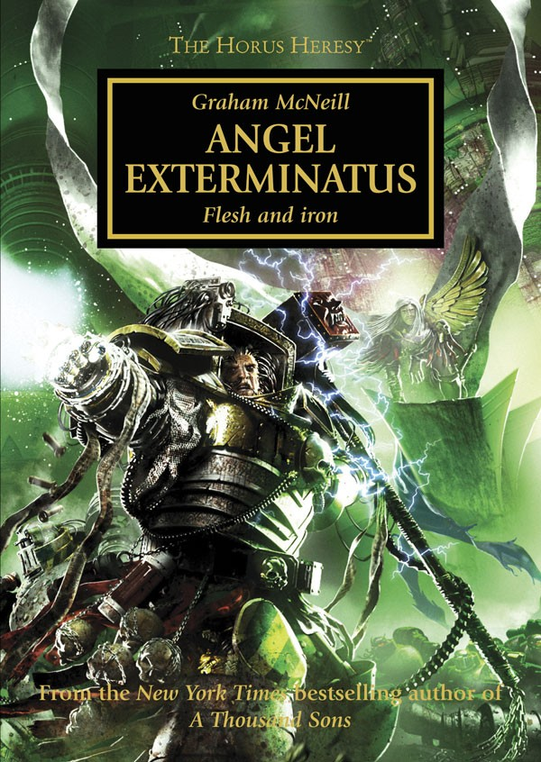

ANGEL EXTERMINATUS

Author: Graham McNeill
Format: Novel
Fulgrim offers Perturabo a chance to seek powerful xenos weaponry on a distant eldar world. The Iron Warriors and Emperor's Children join forces, but neither Legion can be sure what waits in the star maelstrom.
Introduction reviewed against Black Library’s description on 2026-09-27. The publisher page may contain spoilers.
Publication facts: publisher source, checked 2026-09-26.
Open this work in the interactive Archive to track reading progress and explore related works.